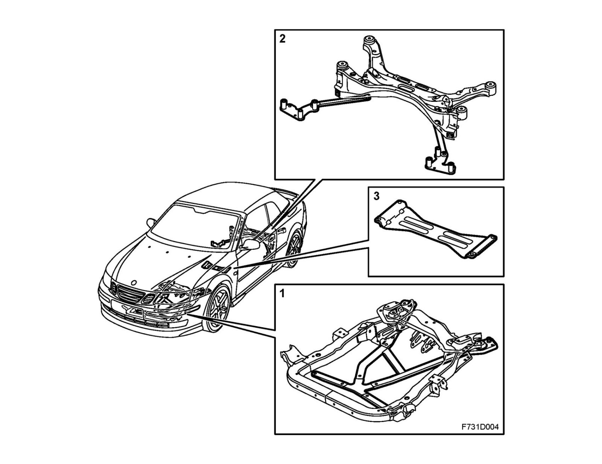

Chassis Reinforcements, CV
Chassis reinforcements, CVOverview

1. Chassis reinforcement, front subframe
2. Chassis reinforcement, rear subframe
3. Chassis reinforcement, center tunnel
Description
Reinforcements bolted to the chassis compensate for the lack of a fixed roof. When the reinforcements are refitted after removal, you must tighten the retaining bolts to the stipulated tightening torques. Refer to Tightening torque, front or Tightening torque, rear.